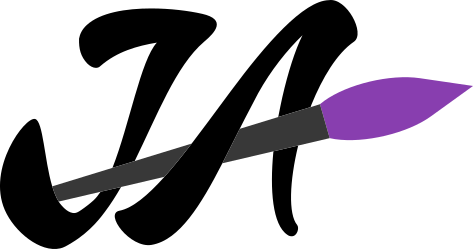

Andrew
Remon
CS Sophomore · Backend · Systems · Security Explorer
Driven by a simple question — "How can such a small machine perform complex calculations in mere fractions of a second?" — I study computers from the inside out. Currently at Cairo University, building things, breaking things, and learning why they work.
"Stay Hungry, Stay Foolish."
The Story Behind the Code
"How can such a small machine perform complex calculations in mere fractions of a second?"
That single question sparked a curiosity that led me to explore the evolution and development of computers. Now, as an analytical CS sophomore at Cairo University (Class of 2028), I'm diving deep into the foundations of computing to understand exactly how things work from the ground up.
I'm constantly pushing myself to explore under-the-hood operations. I find myself drawn to the intersections of Backend Development, Security, and Systems Programming. Instead of just using frameworks, I want to build the efficient, secure systems that power them.
What I Work With
Languages
Tools & Infra
Libraries
My Proof of Work

Bank System & ATM
A complete banking environment simulation focusing on OOP evolution.
Bank System & ATM

Joie Arts
A modern interactive image filter application.
Joie Arts

Board Games Hub
A unified console hub hosting 14 distinct classic board games.
Board Games Hub
On My Radar
Started
In Progress
Deep Dive
Where I'm Learning
B.Sc. in Computer Science
Cairo University
Currently in my sophomore year, building a strong foundation in systems, backend architecture, and
problem-solving.
Relevant Coursework: Data Structures, Algorithms, Databases, Computer Networks,
Discrete Math, Mathematics, Web Technology.
Where I've Contributed
Marketing Head
FCAI Game Dev Club
We (The team and I) build a product (well defined Unity Game Dev Basics Course). So, we highlight it, emphasize our work and turn our College Student Club to a non-profit small Company.
Digital Marketing Intern
Daleel (Egyptian Agency) - Remote
This internship was my window to discover how business works and to explore how companies or startups regulate their operations.
My Blog & Notes
"Imagine if your next boss didn’t have to read your résumé because he already reads your blog"
— Austin Kleon, Show Your Work!
Coding Skill in AI Era for an entry level CS Student.
Read PostHow 5K+ lines of code shape my thinking.
Read PostPost Leading Event Reflections as a Marketing Head in FCAI GD Club.
Read PostMy Journey to explore Business with Digital Marketing Lens Through 'Daleel'.
Read PostHow I become Social Media Tolerant in just one click.
Read PostHow CS Students build a personal brand on LinkedIn.
Read PostLet's Connect
Looking for a Backend or Systems Intern?
I'm always open to discussing new opportunities, exploring low-level systems, or just geeking out over computer architecture. Feel free to reach out! Je vous attends ;)